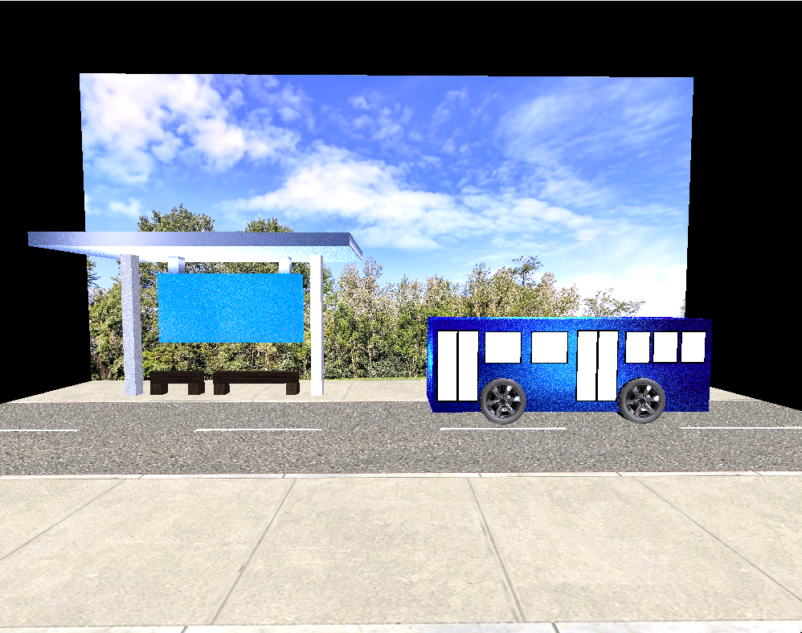
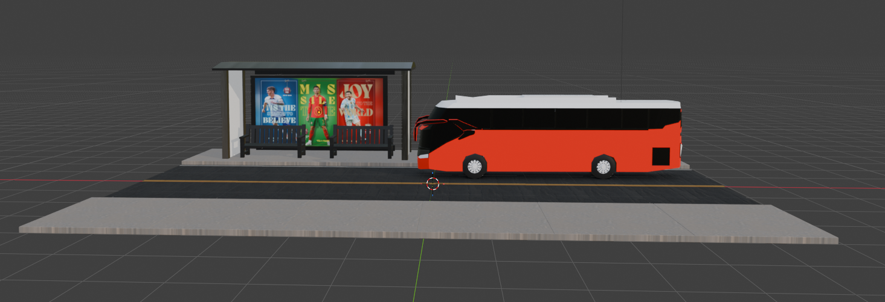

OpenGL project upgraded to Blender Project
The artifact being updated was created in CS 330: Computational Graphics and Visualization which displays a 3D scene of a bus stop with a bus present on the road. This scene showcases a bus modeled after buses seen in movies, a bus stop with benches, a covered awning, and an advertisement for the upcoming World Cup. The original artifact was built using OpenGL in C++, using programmatically created mesh shapes, textures, and lighting to construct the scene. It demonstrated how a 3D environment can be rendered and navigated using keyboard input.

Original OpenGL-based bus stop scene
I decided to improve this artifact because I enjoyed the development process and wanted to further demonstrate my ability to enhance previous work. It was also one of my more recent courses, giving me a strong understanding of its original implementation. Additionally, it pushed me outside my comfort zone into 3D modeling and rendering beyond my web development experience.
The original project demonstrated skills in OpenGL, procedural 3D object creation, texturing, and user-controlled navigation. To improve it, I imported the project into Blender, allowing for more advanced modeling techniques, improved scaling, beveling, and more realistic lighting and shadows. I also enhanced environmental details such as signage and the bus model itself.
I met my intended course outcomes with this enhancement. My goal was to transition the project from OpenGL to Blender, which I successfully achieved. This allowed for more realistic models, improved textures, and enhanced lighting using Blender’s built-in tools.
I also added new features such as updated signage for the advertisement and improved the bus model significantly. No further updates are currently planned, though additional enhancements could be added in the future.

Enhanced Blender-based bus stop scene
Enhancing this artifact taught me the challenges of object modeling and precision-based design. Prior to this, I had not worked with 3D modeling tools, but I had seen similar workflows in CAD environments.
I learned that even small adjustments in scale and placement require careful attention. It was time-consuming to ensure everything aligned properly in the scene. Despite the difficulty, I gained a deeper appreciation for 3D modeling professionals and found the process rewarding overall.